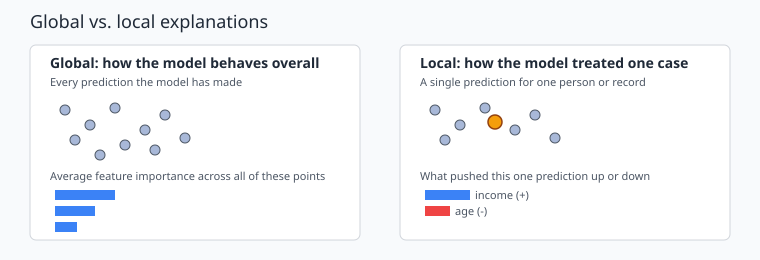
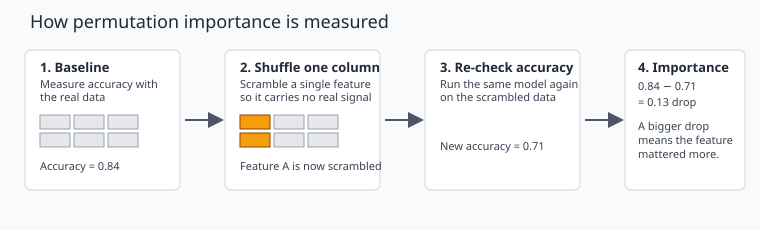
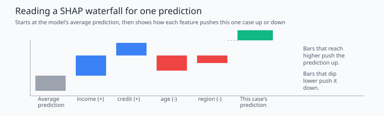

10 Explainable AI and Model Reliability#
Big Idea#
A model can be accurate and still be hard to understand. Accuracy tells us how often a model gets the right answer. It does not tell us why the model made a specific decision, or whether we should trust the reasons behind it.
This chapter asks one guiding question:
A model makes accurate predictions, but can we explain its decisions, and how much should we trust those explanations?
You have already built models with regression and decision trees, and you have learned how to check whether a model performs well. This chapter adds a new question on top of performance: once a model works, can you explain what it is doing, and can you trust that explanation?
Note
Explaining a model is not the same as proving it is correct. An explanation describes how the model behaved. It does not automatically tell you the real-world cause of an outcome.
10.1 Why Explainability Matters#
Imagine a model predicts that a loan application should be denied, or that a patient is at high risk for a condition. The prediction might be accurate most of the time. But the people affected by that decision, and the people responsible for it, usually want to know why.
A model can be useful and still raise hard questions:
Which factors pushed the prediction in this direction?
Would a small change in the input change the outcome?
Is the model relying on a factor it should not be using?
Can we explain this decision to someone who is not a data scientist?
Some models are interpretable by design. A small decision tree or a simple linear regression can often be read directly: you can look at the rules or the coefficients and see roughly how the model is making decisions. Other models, such as large ensembles of trees or neural networks, are harder to read directly. These are often called black-box models, because the path from input to prediction is too complex to trace by hand.
When a model is a black box, we often turn to post-hoc explanation methods: tools that are applied after training to estimate what the model is paying attention to, without changing the model itself. Permutation feature importance and SHAP, covered later in this chapter, are both post-hoc methods.
It helps to keep two separate questions in mind throughout this chapter:
Is the model accurate? (You already know how to check this.)
Can we explain and trust how the model is making its decisions? (This is the new question.)
A good model answers both. A model that only answers the first question is a risk, especially when its predictions affect real people.
10.2 Global vs. Local Explanations#
Explanations come in two main types, and it helps to know which one you are looking at.
A global explanation describes how the model behaves across many predictions. It answers a question like: “Overall, which features matter most to this model?”
A local explanation describes a single prediction. It answers a question like: “Why did the model make this decision for this one person or record?”

Fig. 15 Global explanations summarize the model’s behavior across many predictions. Local explanations zoom in on one single prediction.#
Both views are useful, and they can disagree. A feature might be important on average (global) but have little effect on one particular case (local), or the other way around. If you only look at the global picture, you can miss something unusual about an individual case. If you only look at one local explanation, you can mistake an unusual case for the general pattern. Good practice is to check both.
10.3 Permutation Feature Importance#
Permutation feature importance is one of the simplest ways to estimate a global explanation, and it can be used with almost any trained model.
The idea is simple: if a feature is actually useful to the model, then scrambling that feature’s values should hurt the model’s accuracy. If a feature is not useful, scrambling it should barely change anything.

Fig. 16 Permutation importance works by measuring accuracy, scrambling one feature at a time, and measuring how much accuracy drops.#
The steps are:
Train the model and measure its accuracy on held-out data.
Pick one feature and randomly shuffle its values, so the feature no longer lines up with the correct rows.
Measure the model’s accuracy again, using the shuffled feature.
The drop in accuracy is the feature’s importance. A bigger drop means the model relied on that feature more.
Permutation importance is easy to compute and easy to explain, but it has a real limitation: correlated features. If two features carry similar information (for example, two measurements of roughly the same thing), scrambling just one of them may barely hurt accuracy, because the model can still lean on the other, correlated feature. In that case, both features might look unimportant even though the pair, together, is doing a lot of work. When you see a surprisingly low importance score, it is worth checking whether that feature is correlated with another one in the dataset.
It is also worth repeating a point from the required reading: feature importance describes what the model used. It does not prove that the feature actually causes the outcome. A feature can be important to a model’s predictions without being a real-world cause of anything. Chapter 10.5 returns to this distinction.
10.4 Understanding SHAP#
SHAP (SHapley Additive exPlanations) is a widely used method for local explanations: explaining one prediction at a time.
The intuition behind SHAP is easier than the math behind it. Start from the model’s average prediction across the whole dataset. Then, for one specific case, ask how much each feature value pushed the prediction up or down, away from that average, until you land on the model’s actual prediction for that case. Some features push the prediction higher. Others pull it lower. SHAP assigns each feature a share of the credit (or blame) for the final result.
This chapter will help you learn to read the output.

Fig. 17 A SHAP explanation starts at the model’s average prediction, then shows how each feature value moves one specific prediction up or down.#
A SHAP plot like this one is often called a waterfall plot. To read it:
Start at the left with the model’s average prediction.
Each bar shows one feature. A bar that moves up means that feature pushed the prediction higher. A bar that moves down means it pushed the prediction lower.
The bar on the right is the final prediction for this one case, after adding up every feature’s contribution.
SHAP values can also be summarized across many predictions to build a global picture, similar to permutation importance, but SHAP’s main strength is explaining individual cases clearly, which permutation importance does not do.
SHAP can be slower to compute than permutation importance, especially on large datasets or complex models, so it is normally applied to a smaller sample of cases rather than an entire dataset.
10.5 When Explanations Can Mislead and How Much to Trust Them#
Explanation tools are genuinely useful, but they describe the model’s behavior, not necessarily the real world. Keep the following limits in mind.
Correlated features. As discussed in 10.3, when two features are correlated, importance can be split between them in a way that makes both look less important than they really are.
Data leakage. If a feature accidentally contains information that would not be available at prediction time (for example, a value that is only known after the outcome happens), that feature can appear highly important, while the model is actually just memorizing a shortcut.
Instability. Explanation results can shift from one trained model to another, even when both models perform similarly well on the same data. A small change in model training can lead to a different ranking of feature importance. Before trusting one explanation, it helps to check whether it holds up under small, reasonable changes, such as retraining with a different random seed.
Interpretable does not mean reliable. A simple, readable model is easy to explain, but that does not make it automatically correct or fair. A small decision tree can still make biased or inaccurate predictions. Being easy to read and being trustworthy are two different properties, and a model needs both to be used responsibly.
Importance is not causation. This point from 10.3 is worth repeating directly: a feature can be important to a model without being a real cause of the outcome. If two features tend to occur together in the data, the model may lean on whichever one happens to be easiest to use, which is not the same as saying that feature caused the result.
Evaluating an explanation, critically
When you see a feature-importance chart or a SHAP plot, ask:
Does this result make sense given what I know about the data?
Could a correlated feature be hiding or inflating this result?
Would this result hold up if the model were retrained?
Is this explanation describing a cause, or just a pattern the model picked up on?
A generative AI tool can describe a chart’s shape very confidently. It cannot tell you, on its own, whether that chart reflects something real about your data. That judgment is still your responsibility.
Putting this chapter’s guiding question back together: accuracy tells you how often a model is right. Explanation tools tell you what the model is paying attention to. Trust has to be built by checking both, together, and by staying alert to the limits above, rather than by accepting either one on its own.
A short note on resources: two supplementary videos on explainable AI and SHAP are posted on this week’s Canvas page. They are optional background and are not required to complete the reading.
Key Takeaways#
Accuracy and explainability are two separate questions. A model can score well on one and still raise concerns on the other.
Interpretable models can be read directly. Black-box models usually need a post-hoc explanation method, such as permutation importance or SHAP.
A global explanation summarizes the whole model. A local explanation covers one prediction. They can disagree, and both are worth checking.
Permutation feature importance measures how much accuracy drops when one feature is scrambled. It is simple and broadly applicable, but it can be misleading when features are correlated.
SHAP explains individual predictions by showing how much each feature pushed the result up or down from the model’s average prediction.
Feature importance describes what the model used. It does not prove what caused the outcome in the real world.
Explanations can be unstable, affected by correlated features, or distorted by data leakage. An interpretable model is not automatically a reliable one.
Evaluating an explanation critically, rather than accepting it at face value, is itself a core applied data science skill.
References#
Molnar, C. Interpretable Machine Learning. Permutation Feature Importance. https://christophm.github.io/interpretable-ml-book/feature-importance.html
Molnar, C. Interpretable Machine Learning. SHAP. https://christophm.github.io/interpretable-ml-book/shap.html